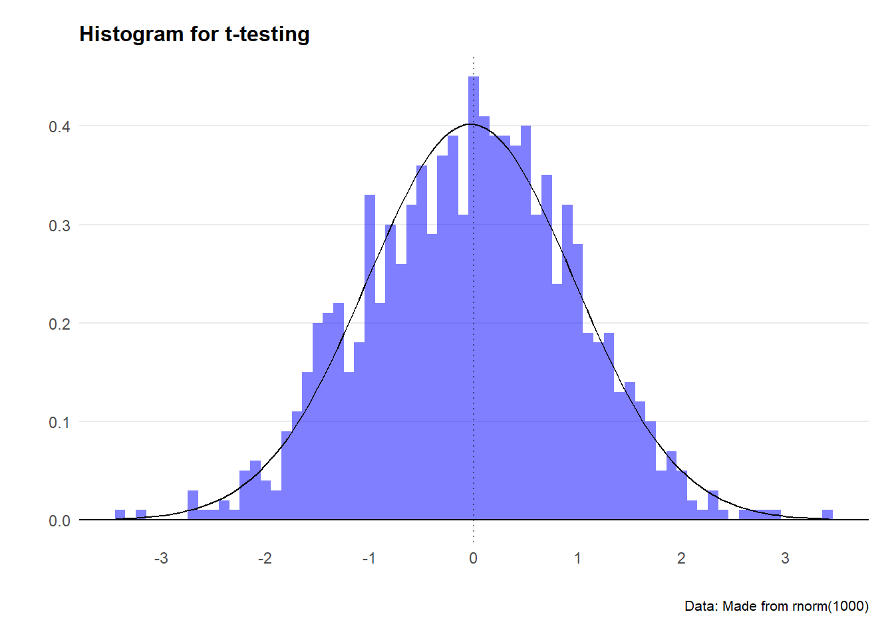
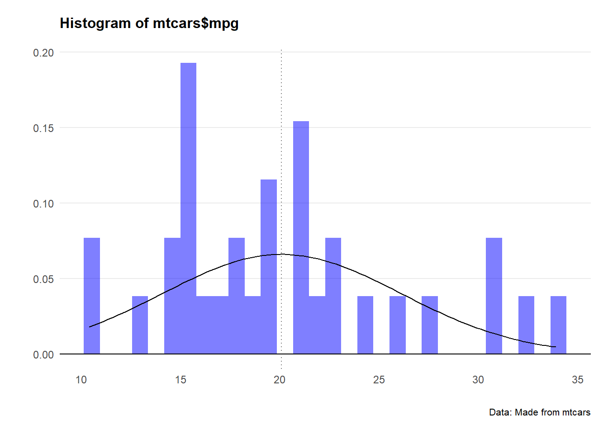
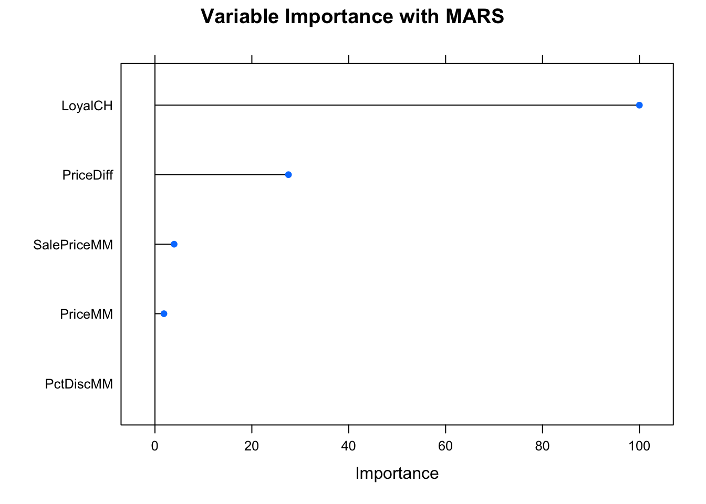
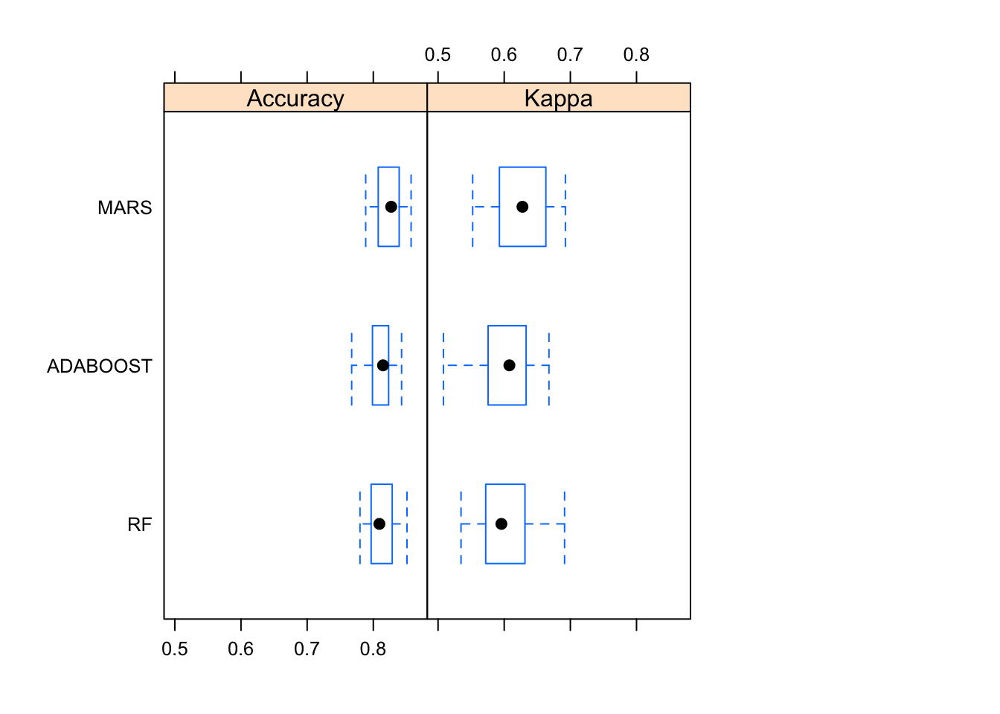

Chapter 7 Machine Learning
7.1 Background
There probably isn’t a hotter term this decade than ‘machine learning.’ But the principles of getting machines to be able to perform an operation based on an unknown input has been around for the best part of 100 years. ‘Figure it out’ is now an instruction you can tell a computer… and sure enough with some careful programming (and a truckload of data to conduct trial and error experiments on) - we can get pretty close.
I used these handy resources when writing this guide:
We’ll start our journey by loading some packages
# Load in packages
library(ggplot2)
library(caret)
library(skimr)
library(RANN)
library(randomForest)
library(fastAdaboost)
library(gbm)
library(xgboost)
library(caretEnsemble)
library(C50)
library(earth)
library(skimr)
library(cumSeg)
library(caTools)7.2 Beyond regressions
We know that a model is just any function (of one or more variables)
that helps to explain observations. The most basic models to explain a
data set are mean, min, and max. These functions don’t rely on any
variables outside of the variable of interest itself.
Moving to the slightly more abstract, we recall that a linear regression fits a straight line through a data set that minimizes the variance (i.e. the errors) between each point and the model line.
To fit a linear regression, we use the lm() function in the following
format:
linear_model <- lm(y ~ x, dataset)
To make predictions using mod on the original data, we can call the predict() function:
predict_data <- predict(linear_model, dataset)
# Let's use the mtcars dataset as an example
# Fit a model to the mtcars data
data(mtcars)
# Build a linear model to explain mpg using hp
mtcars_model <- lm(mpg ~ hp, mtcars)
# Run the model over the data
mtcars_model_estimates <- predict(mtcars_model,mtcars)
# Bind the original figures for mpg with the predicted figures for mpg
mtcars_model_outputs <- cbind(Actual_mpg=mtcars$mpg,
Actual_hp=mtcars$hp,
Predicted_mpg=mtcars_model_estimates,
Residuals=resid(mtcars_model),
Fitted=fitted(mtcars_model))
# Ensure the outputs are a df
mtcars_model_outputs <- as.data.frame(mtcars_model_outputs)We can see how well this model estimated the dataset by looking at the residuals on a plot.
ggplot(mtcars_model_outputs)+
geom_line(aes(x = Actual_hp, y = Predicted_mpg), col = "blue")+
geom_point(aes(x = Actual_hp, y = Actual_mpg), col = "blue", alpha=0.5)+
geom_segment(aes(x = Actual_hp, y = Actual_mpg,
xend = Actual_hp, yend = Fitted),col="black",alpha=0.8, linetype="dotted")+
labs(title="Building a regression model",
subtitle = "Higher horsepower cars get less miles to the gallon",
caption = "Data: mtcars dataset",
x="Horsepower",
y="Miles per gallon") +
theme_minimal() +
theme(legend.position="bottom")+
theme(plot.title=element_text(face="bold",size=12))+
theme(plot.subtitle=element_text(size=11))+
theme(plot.caption=element_text(size=8))+
theme(axis.text=element_text(size=8))+
theme(panel.grid.minor = element_blank())+
theme(panel.grid.major.x = element_blank()) +
theme(axis.title.y =
element_text(margin = ggplot2::margin(t = 0, r = 3, b = 0, l = 0)))+
theme(axis.text.y = element_text(vjust = -0.5,
margin = ggplot2::margin(l = 20, r = -10)))+
theme(plot.subtitle = element_text(margin=ggplot2::margin(0,0,25,0))) +
theme(axis.line.x =
element_line(colour ="black",size=0.4))+
theme(axis.ticks.x = element_line(colour ="black",size=0.4))
To quantify the model fit in a single number, we can use the Root Mean Square Error (RMSE).
# Calculate Root Mean Square Error (RMSE) manually
error <- mtcars_model_estimates - mtcars[["mpg"]]
mtcars_rmse <- sqrt(mean(error ^ 2))
# We can also simply use the residuals that are plotted on the chart above
sqrt(mean(mtcars_model_outputs$Residuals^ 2))So in very rough terms, we can say that the model predicts miles per
gallon for a given level of horsepower with around 4 mpg of error.
7.3 Classification models using Caret
I quickly stumbled upon the caret package when delving into ML in R.
Used for Classification And REgression Training (how
clever), it’s a bit of a one-stop shop for all machine learning
functionality.
In this worked example, we’ll work through how to estimate a binary variable (which of two brands of orange juice a customer purchased) based on some retail and demographic data. The original data set is called OJ: Orange Juice Data from Introduction to Statistical Learning in R (1998).
Let’s take a look at the set
# Import dataset
orange <- read.csv('https://raw.githubusercontent.com/selva86/datasets/master/orange_juice_withmissing.csv')
# Structure of the dataframe
str(orange)
# Have a look
head(orange[, 1:10])First things first - we need to split our data into ‘train’ and ‘test’ sets. Why? Well We want to have a model where we can input an x value into an algorithm and it will know the value for y. If we give our model every x and y couplet at the start - there will be no data to ‘test’ the model on, since it will already be incorporating those the ‘test’ data relationships into the model itself. It’s a bit like getting the answer sheet to the exam as you’re walking in - the exam result it probably going to be a little biased.
# Set the seed so R knows how to randomise
set.seed(100)
# Step 1: Get row numbers for the training data
trainRowNumbers <- caret::createDataPartition(orange$Purchase, p=0.8, list=FALSE)
# Step 2: Create the training dataset
trainData <- orange[trainRowNumbers,]
# Step 3: Create the test dataset
testData <- orange[-trainRowNumbers,]
# Store X and Y for later use.
# X are our predictor variables, Y is out prediction variable.
x = trainData[, 2:18]
y = trainData$PurchaseAlas we don’t live in a perfect world, and there’s going to be missing
data in our set. Luckily, caret actually has a way of guessing the
middle values (a machine learning application itself).
Strictly speaking, filling in missing data before running a ML application is called ‘data snooping’ because we’re applying already modeled data to a model. It’s not best practice, and a more robust approach would be to get a large enough data set that you can just remove the rows containing any NA’s. Regardless, here’s how to use ‘k nearest number’ estimates to fill in gaps in data sets.
# Check what data is missing using the skmir package
skimmed <- skimr::skim(trainData)
skimmed
# Create the knn imputation model on the training data
preProcess_missingdata_model <- caret::preProcess(trainData, method='knnImpute')
preProcess_missingdata_model
# Use the imputation model to predict the values of missing data points
trainData <- predict(preProcess_missingdata_model, newdata = trainData)
anyNA(trainData)One more pesky data thing - categorical variables don’t sit well with ML
algorithms. It’s much better to have tidy-ish columns with binary (0 and
1) flags as to whether a variable is true or false. There’s a simple way
of converting categorical to dummy variables in R using the dummyVars
function.
# Creating dummy variables is converting a categorical variable to as many binary variables as here are categories.
dummies_model <- caret::dummyVars(Purchase ~ ., data=trainData)
# Create the dummy variables using predict. The Y variable (Purchase) will not be present in trainData_mat.
trainData_mat <- predict(dummies_model, newdata = trainData)
# # Convert to dataframe
trainData <- data.frame(trainData_mat)
# # See the structure of the new dataset
str(trainData)There’s a bunch of numeric variables here that are hard to algorithms to
work with - as it’s the relative levels between the numbers that really
matters. To solve for this issue, let’s convert all numbers to a scale
between zero and 1. The caret package has a nice function called
preProcess to do this.
preProcess_range_model <- preProcess(trainData, method='range')
trainData <- predict(preProcess_range_model, newdata = trainData)
# Append the Y variable
trainData$Purchase <- y
apply(trainData[, 1:10], 2, FUN=function(x){c('min'=min(x), 'max'=max(x))})Great! Now all our variables are between 0 and 1 in size.
7.4 Build a classification model
Let’s start building our model.
We’ll kick off with a multivariate adaptive regression splines (MARS)
model which due to reasons not worth
explaining is included in the earth R package.
Let’s run the model on the trainData set - and also use the varImp to
see what variables the model found most important in predicting the
variable Purchase.
# Set the seed for reproducibility
set.seed(100)
# Train the model using randomForest and predict on the training data itself.
model_mars = train(Purchase ~ ., data=trainData, method='earth')
fitted <- predict(model_mars)
model_mars
plot(model_mars, main="Model Accuracies with MARS")
varimp_mars <- varImp(model_mars)
plot(varimp_mars, main="Variable Importance with MARS")
Looks good! Now we’ll see how well the model does with test data
# Step 1: Impute missing values
testData2 <- predict(preProcess_missingdata_model, testData)
# Step 2: Create one-hot encodings (dummy variables)
testData3 <- predict(dummies_model, testData2)
# Step 3: Transform the features to range between 0 and 1
testData4 <- predict(preProcess_range_model, testData3)
# View
head(testData4[, 1:10])
# Predict on testData
predicted <- predict(model_mars, testData4)
head(predicted)
#Change the data type to a factor
testData$Purchase <- as.factor(testData$Purchase)
# Compute the confusion matrix
confusionMatrix(reference = testData$Purchase,
data = predicted,
mode='everything',
positive='MM')We see in the confusion matrix that the MARS model got the prediction correct around 80% of the time.
7.5 Compare different ML models
MARS isn’t the only ML model we can use in R - there’s a bunch of useful approaches. Let’s run a few.
We’ll start with adaboost
set.seed(100)
# Train the model using adaboost
model_adaboost = train(Purchase ~ .,
data=trainData,
method='adaboost',
tuneLength=2)
model_adaboostNow let’s try random forest
set.seed(100)
# Train the model using rf
model_rf = train(Purchase ~ .,
data=trainData, method='rf',
tuneLength=5)
model_rfAnd we can compare how all these models faired compared to one another
# Compare model performances using resample()
models_compare <- resamples(list(ADABOOST=model_adaboost, RF=model_rf, MARS=model_mars))
# Summary of the models performances
summary(models_compare)
bwplot(models_compare, layout = c(3, 1))
MARS seems to win out here - with the highest median and max accuracy.
7.6 Building a predictive ML model
ROC curve is a really useful shortcut for summarizing the performance of a classifier over all possible thresholds. This saves you a lot of tedious work computing class predictions for many different thresholds and examining the confusion matrix for each.
My favorite package for computing ROC curves is caTools, which contains a function called colAUC(). This function is very user-friendly and can actually calculate ROC curves for multiple predictors at once.
# Make ROC curve
#colAUC(predicted, testData4, plotROC = TRUE)The ROC curve is a very useful, single-number summary of a model’s ability to discriminate the positive from the negative class (e.g. mines from rocks). An AUC of 0.5 is no better than random guessing, an AUC of 1.0 is a perfectly predictive model, and an AUC of 0.0 is perfectly anti-predictive (which rarely happens).
This is often a much more useful metric than simply ranking models by their accuracy at a set threshold, as different models might require different calibration steps (looking at a confusion matrix at each step) to find the optimal classification threshold for that model.